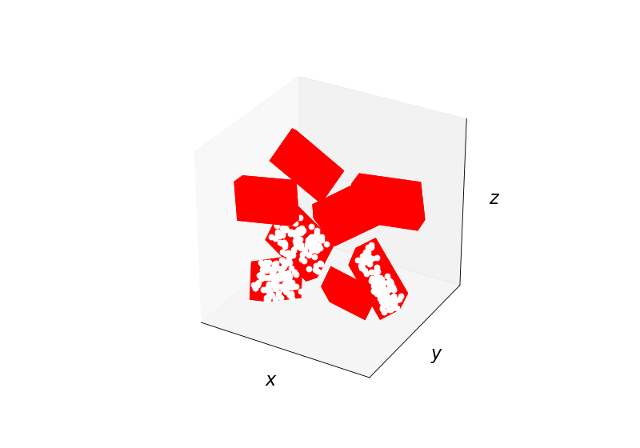

oriented_bounding_box_numpy
-
compas.geometry.oriented_bounding_box_numpy(points)[source] Compute the oriented minimum bounding box of a set of points in 3D space.
Notes
The implementation is based on the convex hull of the points.
- Parameters
points (list) – XYZ coordinates of the points.
- Returns
list – The XYZ coordinates of the corners of the bounding box.
Examples
from numpy.random import randint from numpy.random import rand import matplotlib.pyplot as plt from compas.plotters import Bounds from compas.plotters import Cloud3D from compas.plotters import Box from compas.plotters import create_axes_3d from compas.geometry import rotation_matrix from compas.geometry import transform from compas.geometry import oriented_bounding_box_numpy clouds = [] for i in range(8): a = randint(1, high=8) * 10 * 3.14159 / 180 d = [1, 1, 1] cloud = rand(100, 3) if i in (1, 2, 5, 6): cloud[:, 0] *= - 10.0 cloud[:, 0] -= 3.0 d[0] = -1 else: cloud[:, 0] *= 10.0 cloud[:, 0] += 3.0 if i in (2, 3, 6, 7): cloud[:, 1] *= - 3.0 cloud[:, 1] -= 3.0 d[1] = -1 else: cloud[:, 1] *= 3.0 cloud[:, 1] += 3.0 if i in (4, 5, 6, 7): cloud[:, 2] *= - 6.0 cloud[:, 2] -= 3.0 d[2] = -1 else: cloud[:, 2] *= 6.0 cloud[:, 2] += 3.0 R = rotation_matrix(a, d) cloud[:] = transform(cloud, R) clouds.append(cloud.tolist()) axes = create_axes_3d() bounds = Bounds([point for points in clouds for point in points]) bounds.plot(axes) for cloud in clouds: bbox = oriented_bounding_box_numpy(cloud) Cloud3D(cloud).plot(axes) Box(bbox[1]).plot(axes) plt.show()